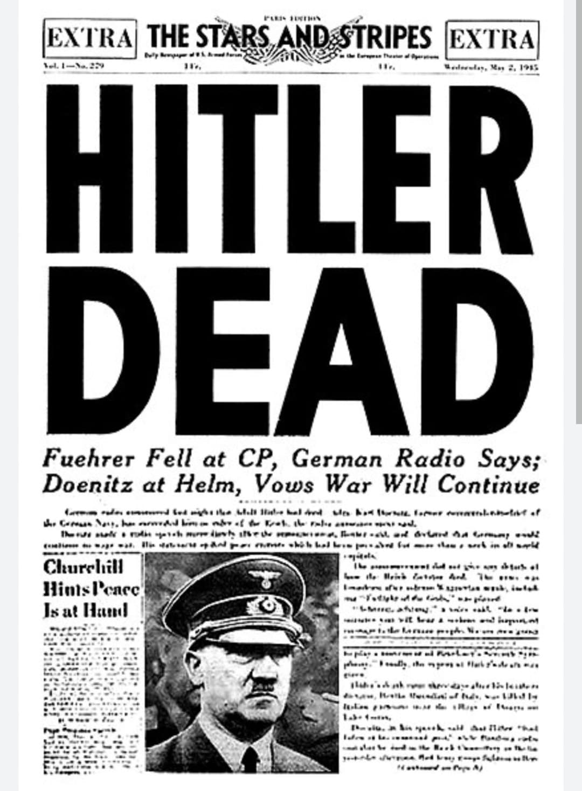
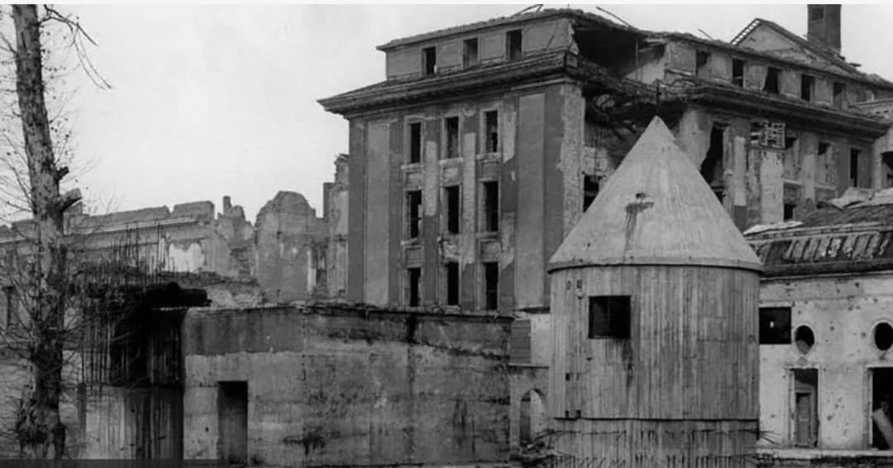
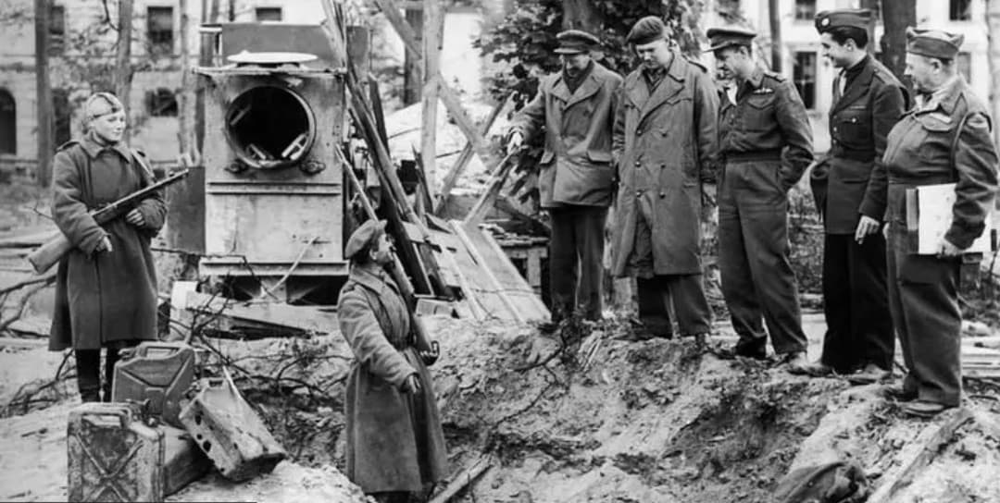

Le 30 avril 1945, Adolf Hitler se suicide dans le Führerbunker, alors que Berlin est presque entièrement occupée par l’Armée rouge. Cet acte marque la disparition du régime nazi et la fin de son pouvoir en Europe.
Quelques heures avant sa mort, Hitler épouse sa compagne de longue date, Eva Braun, scellant leur destin commun dans les derniers instants du Reich.
Au printemps 1945, le Reich est en ruines. Les armées alliées avancent sur tous les fronts. Berlin est encerclée par l’Armée rouge, les communications sont coupées, et les derniers bastions allemands s’effondrent.
Hitler refuse de quitter la capitale. Il s’enferme dans le Führerbunker, un complexe souterrain situé sous la chancellerie du Reich.

Dans la nuit du 28 au 29 avril 1945, Hitler épouse Eva Braun lors d’une brève cérémonie civile dans le bunker.
Ce mariage tardif est un geste symbolique : après plus de quinze ans de relation, Hitler reconnaît officiellement Eva Braun comme son épouse juste avant leur suicide. Elle refuse de fuir et choisit de mourir à ses côtés.
Le 30 avril 1945, Hitler et Eva Braun se retirent dans une pièce du bunker. Hitler se tire une balle dans la tête, tandis qu’Eva Braun absorbe du cyanure.
Leurs corps sont transportés dans le jardin de la chancellerie, aspergés d’essence et brûlés conformément aux instructions d’Hitler.

Hitler refuse d’être capturé ou jugé. Pour lui, quitter Berlin aurait été un aveu de défaite. Il choisit de mourir dans le lieu symbolique du pouvoir nazi, entouré de ses derniers fidèles.
Le bunker devient ainsi le théâtre de la disparition du régime.
Après la mort d’Hitler, l’amiral Karl Dönitz tente brièvement de maintenir un gouvernement. Mais le Reich s’effondre totalement.
Le 8 mai 1945, l’Allemagne signe la capitulation sans conditions. La mort d’Hitler marque la fin de la guerre en Europe.